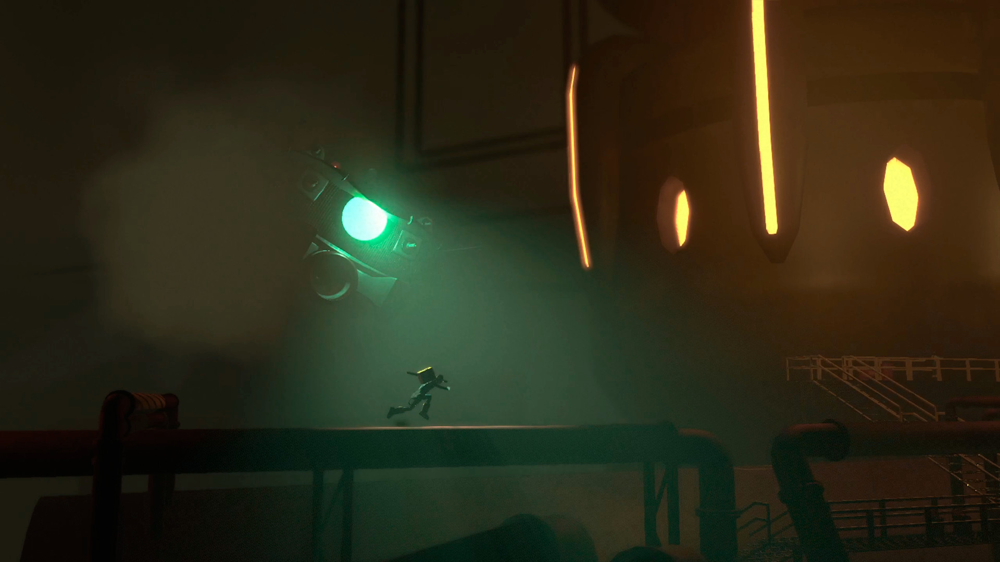
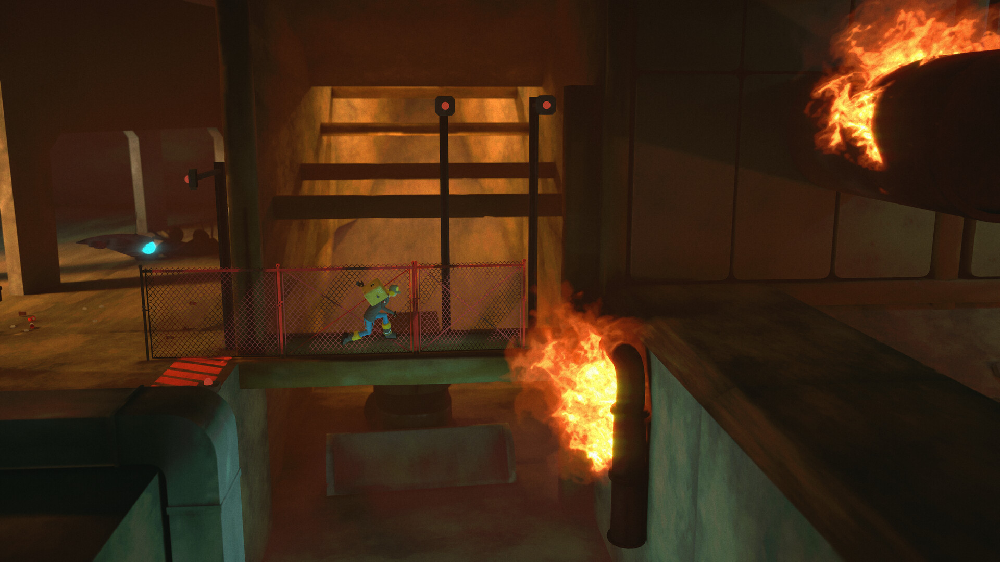
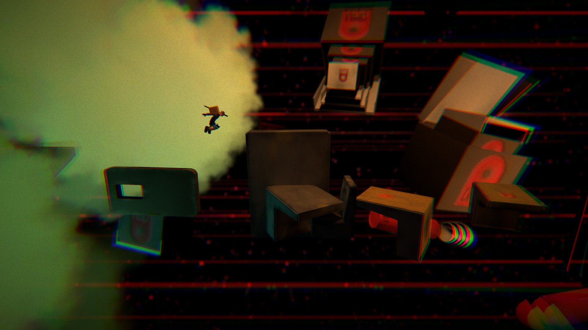
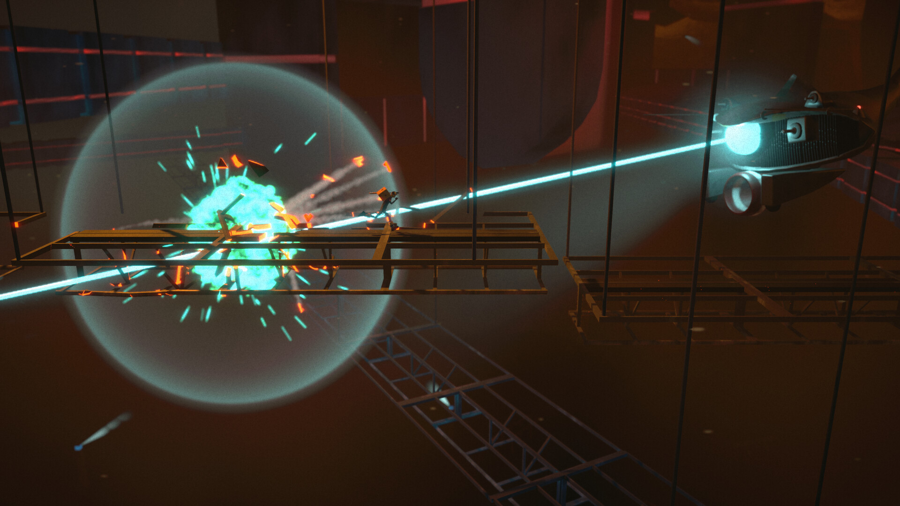

Journey through the underground metropolis of Antro, a 2.5D rhythm platformer where you deliver a mysterious package and spark a revolution against a totalitarian government. Published by Selecta Digital after three years of development.
Antro is a 2.5D rhythm action platformer set in a stylised underground city pulsing with urban music. The player navigates layered environments, solves puzzles, and fights through a totalitarian regime, all synchronized to the beat of an original soundtrack.
The project had been in active development for three years before I joined. I was brought in during the final push to close out production and ship the game through Selecta Digital, one of Spain's leading indie publishers.
Most producers join a project from day one. I joined Antro mid-final-sprint on a title that had been in development for three years. The team had established workflows, pre-existing dynamics, and a publisher deadline already in motion.
The challenge wasn't starting something new. It was integrating fast enough to immediately add value without disrupting a team that had been working together for years, while coordinating an external QA company and a publisher simultaneously.
I stepped into a team that had been building their own way of working for three years. Rather than imposing a new system, I mapped their workflow first, spending the first days understanding their communication patterns, Notion structure, sprint cadence, and interpersonal dynamics.
I was the sole point of contact between Gatera Studio and the external QA company, managing the full bug pipeline from initial report through developer fix and final sign-off.
Beyond internal production, I handled the studio's external-facing communication, a responsibility that required discretion, clarity, and understanding of the publishing landscape.
Three years of development meant three years of accumulated documentation. I audited, restructured, and maintained the production infrastructure so the team could move fast in the final stretch without losing critical context.




Antro shipped on schedule — delivered to Gold through Selecta Digital within four months of me joining the project. A three-year development cycle closed out on time, with a 10-person team, an external QA pipeline, and a publisher relationship all running in parallel.
The key lesson from this project: late-stage production management is a distinct skill. It requires fast context-switching, high trust, and the discipline to not fix things that aren't broken, while still fixing the things that are.